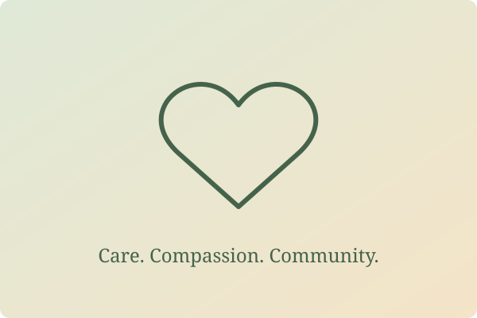
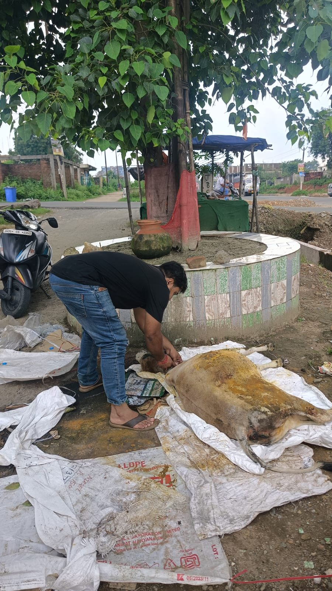
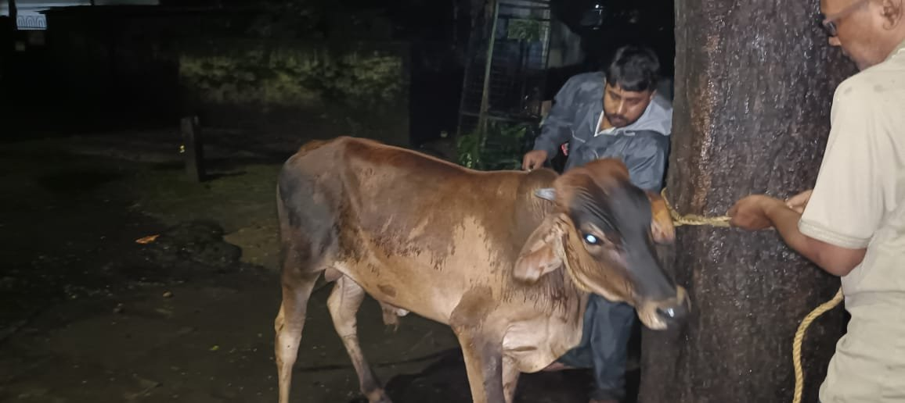
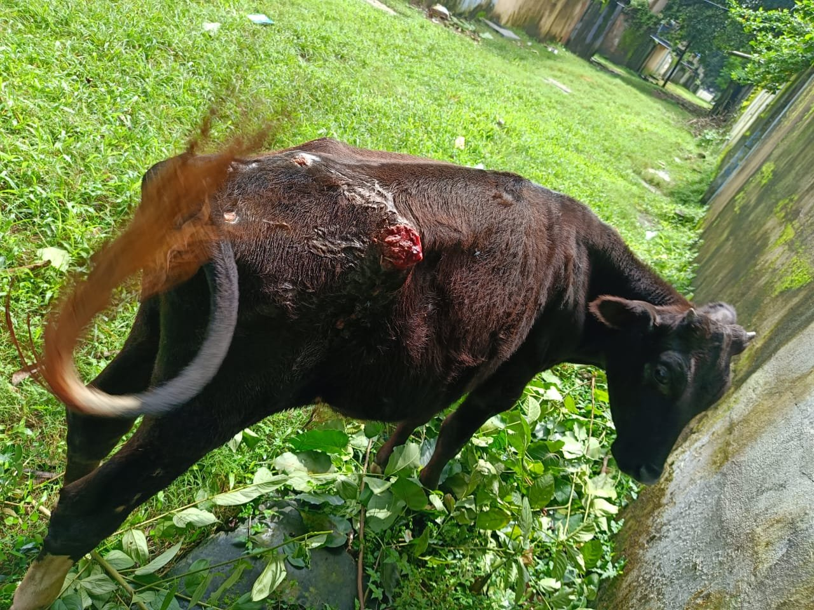

♡
♡Programme photograph to be added
Animal rescue
Field response and initial care for injured or sick animals in Jamshedpur.
PROJECTS
Explore the programmes described by the Trust, and the published rescue stories behind the work.
PROJECTS • WHAT WE DO
♡Field response and initial care for injured or sick animals in Jamshedpur.
 ♡
♡Medical care, surgery and recovery support for animals in need.

♡Recovery care and shelter support, including longer-term care for old or disabled animals.
Approved programme photo to be addedThe published journey describes feeding street animals, including continued feeding during the COVID-19 lockdown.
Approved programme photo to be addedThe Trust lists rabies vaccination and population-control drives among its animal-welfare programmes.
Approved programme photo to be addedEnquire about permanent homes or temporary fostering for animals ready for the next stage of care.
Approved programme photo to be addedSchool activities, workshops and community awareness that encourage responsible animal care.
Approved programme photo to be addedServices and species context ↗ · Source checked 12 October 2026.
RESCUE STORIES

♡The team responded to a critically ill cow near a tree and provided urgent medical support. The Trust reports that timely intervention saved the animal.

♡Volunteers found a weak cow tied outdoors in the rain. They freed it and arranged food, shelter and treatment.

♡A cow with an infected back wound received field treatment and a sterile dressing. The published report describes the start of its recovery.
Published rescue reports; event dates are not supplied ↗ · Source checked 12 October 2026.
Success stories as reported on the impact page ↗ · Source checked 12 October 2026.
A KINDER TOMORROW STARTS TODAY